File: 001050.gt.txt (if the image is defective, simply delete all Arabic text and the line will be excluded)
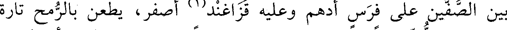
بين الصفين على فرس أدهم وعليه قذاغند(1) أصفر، يطعن بالرمح تارة
File: 001051.gt.txt (if the image is defective, simply delete all Arabic text and the line will be excluded)
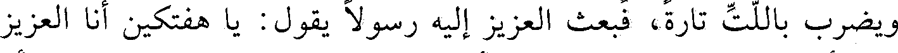
ويضرب باللت تارة، فبعث العزيز إليه رسولا يقول: يا هفتكين أنا العزيز
File: 001052.gt.txt (if the image is defective, simply delete all Arabic text and the line will be excluded)
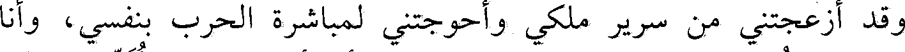
وقد أزعجتني من سرير ملكي، وأحوجتني لمباشرة الحرب بنفسي، وأنا
File: 001053.gt.txt (if the image is defective, simply delete all Arabic text and the line will be excluded)
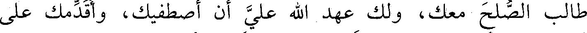
طالب الصلح معك، ولك عهد الله علي أن أصطفيك، وأقدمك على
File: 001054.gt.txt (if the image is defective, simply delete all Arabic text and the line will be excluded)
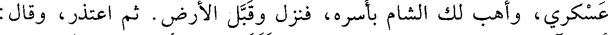
عسكري، وأهب لك الشام بأسره، فنزل وقبل الأرض. ثم اعتذر وقال:
File: 001055.gt.txt (if the image is defective, simply delete all Arabic text and the line will be excluded)
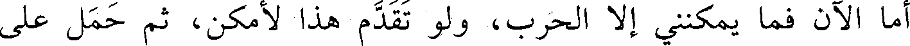
أما الآن فما يمكنني إلا الحرب، ولو تقدم هذا لأمكن، ثم حمل على
File: 001056.gt.txt (if the image is defective, simply delete all Arabic text and the line will be excluded)
الميسرة فهزمها، فحمل العزيز بنفسه، وحملت معه ميمنته، فانهزم
File: 001057.gt.txt (if the image is defective, simply delete all Arabic text and the line will be excluded)
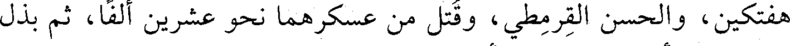
هفتكين، والحسن القرمطي، وقتل من عسكرهما نحو عشرين ألف، ثم بذل
File: 001058.gt.txt (if the image is defective, simply delete all Arabic text and the line will be excluded)
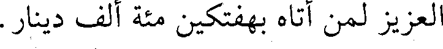
العزيز لمن أتاه بهفتكين مئة ألف دينار.
File: 001059.gt.txt (if the image is defective, simply delete all Arabic text and the line will be excluded)
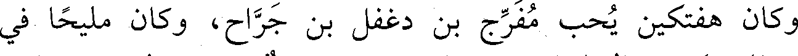
وكان هفتكين يحب مفرج بن دغفل بن جراح، وكان مليحا في
File: 001060.gt.txt (if the image is defective, simply delete all Arabic text and the line will be excluded)
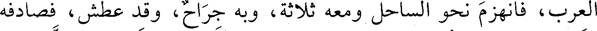
العرب، فانهزم نحو الساحل ومعه ثلاثة، وبه جراح، وقد عطش، فصادفه
File: 001061.gt.txt (if the image is defective, simply delete all Arabic text and the line will be excluded)
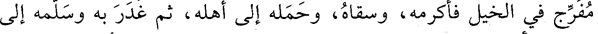
مفرج في الخيل فأكرمه، وسقاه، وحمله إلى أهله، ثم غدر به وسلمه إلى
File: 001062.gt.txt (if the image is defective, simply delete all Arabic text and the line will be excluded)
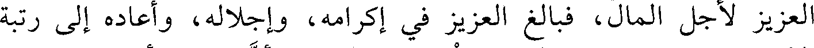
العزيز لأجل المال، فبالغ العزيز في إكرامه، وإجلاله، وأعاده إلى رتبة
File: 001063.gt.txt (if the image is defective, simply delete all Arabic text and the line will be excluded)
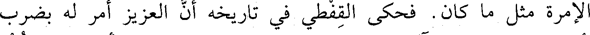
الإمرة مثل ما كان. فحكى القفطي في تاريخه أن العزيز أمر له بضرب
File: 001064.gt.txt (if the image is defective, simply delete all Arabic text and the line will be excluded)
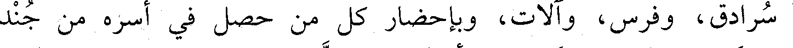
سرادق، وفرس، وآلات، وبإحضار كل من حصل في أسره من جند
File: 001065.gt.txt (if the image is defective, simply delete all Arabic text and the line will be excluded)
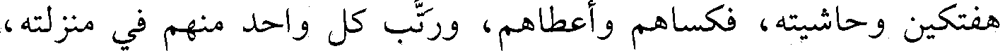
هفتكين وحاشيته، فكساهم وأعطاهم، ورتب كل واحد منهم في منزلته،
File: 001066.gt.txt (if the image is defective, simply delete all Arabic text and the line will be excluded)
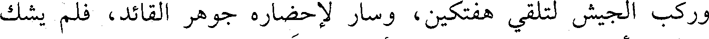
وركب الجيش لتلقي هفتكين، وسار لإحضاره جوهر القائد، فلم يشك
File: 001067.gt.txt (if the image is defective, simply delete all Arabic text and the line will be excluded)
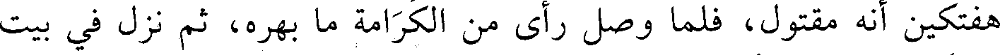
هفتكين أنه مقتول، فلما وصل رأى من الكرامة ما بهره، ثم نزل في بيت
File: 001068.gt.txt (if the image is defective, simply delete all Arabic text and the line will be excluded)
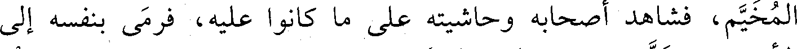
المخيم، فشاهد أصحابه وحاشيته على ما كانوا عليه، فرمى بنفسه إلى
File: 001069.gt.txt (if the image is defective, simply delete all Arabic text and the line will be excluded)
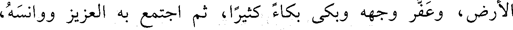
الأرض، وعفر وجهه وبكى بكاء كثيرا، ثم اجتمع به العزيز ووانسه،
File: 001070.gt.txt (if the image is defective, simply delete all Arabic text and the line will be excluded)
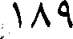
189
File: 001071.gt.txt (if the image is defective, simply delete all Arabic text and the line will be excluded)
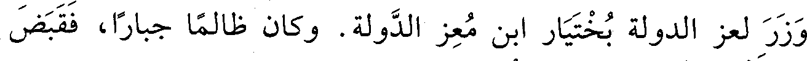
وزر لعز الدولة بختيار ابن معز الدولة. وكان ظالما جبارا، فقبض
File: 001072.gt.txt (if the image is defective, simply delete all Arabic text and the line will be excluded)
عليه ثم قتله في حبسه، وله تسع وخمسون سنة.
File: 001073.gt.txt (if the image is defective, simply delete all Arabic text and the line will be excluded)
73 - عبدالله بن عدي، أبو عبدالرحمن الصابوني.
File: 001074.gt.txt (if the image is defective, simply delete all Arabic text and the line will be excluded)
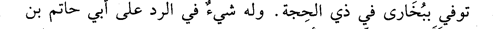
توفي ببخارى في ذي الحجة. وله شيء في الرد على أبي حاتم بن
File: 001075.gt.txt (if the image is defective, simply delete all Arabic text and the line will be excluded)
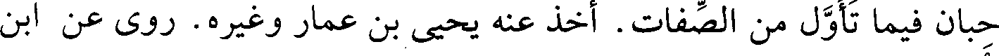
حبان فيما تأول من الصفات. أخذ عنه يحيى بن عمار وغيره. روى عن ابن
File: 001076.gt.txt (if the image is defective, simply delete all Arabic text and the line will be excluded)
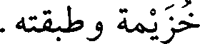
خزيمة وطبقته.
File: 001077.gt.txt (if the image is defective, simply delete all Arabic text and the line will be excluded)
74 - عبدالحميد بن أحمد بن عيسى.
File: 001078.gt.txt (if the image is defective, simply delete all Arabic text and the line will be excluded)
سمع النسائي، وتوفي في شعبان.
File: 001079.gt.txt (if the image is defective, simply delete all Arabic text and the line will be excluded)
75 - عبدالعزيز بن أحمد بن محمد بن أسيد، أبو بكر المديني
To Save: `Ctrl+s`, make sure to choose `Webpage, complete`!